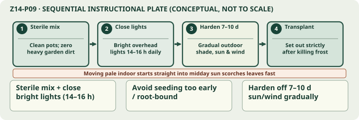

Z14-P09 · Food production and preservation · New manuscript
Start indoor seedlings with real light and harden off before transplanting
Produce stocky, resilient transplants (tomatoes, peppers, cabbage, squash starts) without leggy damping-off failure or sun-scald shock.
When it applies · Northern gardens requiring indoor starts 4 to 8 weeks before last spring frost.
Equipment · Clean sterile seed-starting mix, bright overhead grow lights (not dim windowsills), gentle airflow fan, and outdoor shaded staging spot.

Actions
- Start seeds in clean containers with sterile commercial seed-starting mix (never unsterilized heavy garden dirt, which causes fungal damping-off collapse) under bright overhead lights positioned inches above leaves for 14 to 16 hours daily.[P01, P03]
- Time indoor seeding conservatively—starting tomatoes or squash 12 weeks too early produces root-bound, stressed plants that lag behind younger vigorous starts; check exact weeks-before-frost on seed packets.[P01]
- "Harden off" indoor seedlings gradually over 7 to 10 days before planting outdoors—starting with 1 to 2 hours of dappled outdoor shade sheltered from wind and increasing direct sun and cool air daily so tender leaves do not sunburn or snap.[P01]
Failure recognition · Moving pale windowsill tomato seedlings directly into full windy midday sun on day one, bleaching and killing their leaves within hours.[P01]
Verify · Confirm sterile mix, close overhead lighting, gentle airflow, and full 7–10 day gradual outdoor hardening before transplanting.[P01]
Stop or change course · Seedlings showing pinched brown soil-line stems (damping-off) must be discarded cleanly and pots sanitized before reuse.[P03]
Evidence and editorial notes
- P01 · University of Minnesota Extension · Planting the Vegetable Garden (current web edition)
- Section: Site Selection, Sunlight, Frost Dates, and Short-Season Planning · Conditions: Home vegetable gardening in Upper Midwest / Minnesota (USDA Zones 3–5)
Support: Select a sunny well-drained garden site receiving 6–8+ hours of direct sunlight, match crop days-to-maturity to local last-spring and first-autumn frost dates, and separate cool-season crops from frost-sensitive warm-season crops.
Limitations: Microclimates, low frost pockets, and soil clay/sand composition shift local planting windows by weeks. · Conflicting evidence: None; anchors regional Minnesota growing-season realism.
Editorial note: Grounds Z14 regional food production and frost-window planning. · Specialist reviewer: Horticulture and university Extension specialist
Primary source · checked 2026-11-24 - P03 · University of Minnesota Extension · Planting the Vegetable Garden (current web edition)
- Section: Watering, Mulching, Crop Rotation, and Integrated Pest Management · Conditions: Home vegetable plots across seasonal dry/wet swings
Support: Water deeply at the soil base rather than overhead foliage to conserve moisture and curb fungal disease, mulch soil to stabilize temperature and weeds, rotate plant families across seasons, and identify pests before choosing least-toxic controls.
Limitations: Untreated rainwater or suspect surface water should not be splashed onto ready-to-eat leafy crops immediately before harvest. · Conflicting evidence: None; aligns with FSG-4 clean produce handling.
Editorial note: Grounds resilient low-input gardening and biological pest management. · Specialist reviewer: Extension horticulture and integrated pest management
Primary source · checked 2026-11-24
Source lineage · UMN Extension Planting the Vegetable Garden; new manuscript · Classification · New manuscript.